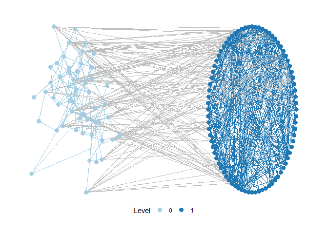
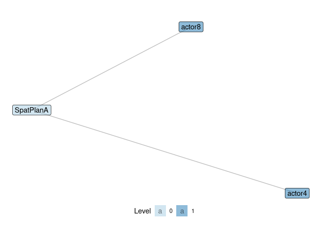
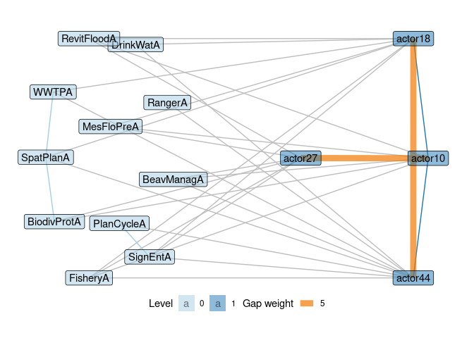
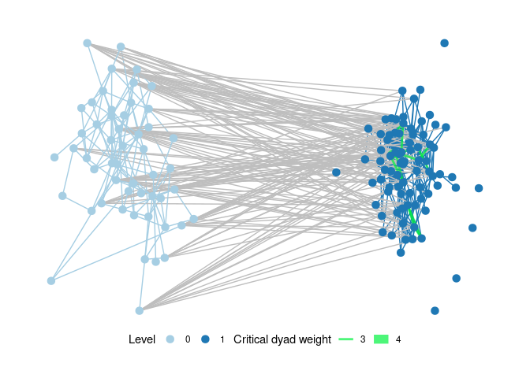
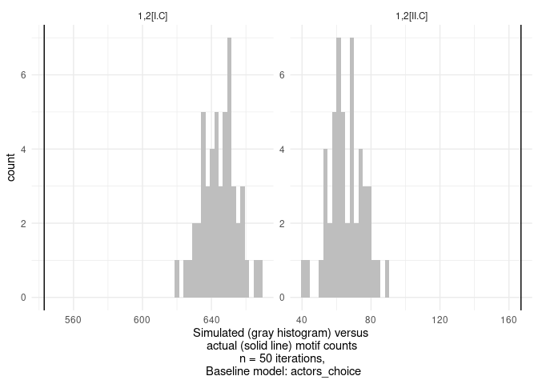

This package provides tools to analyse multi-level networks in terms of motifs.
Multi-level networks combine multiple networks in one representation, e.g. social-ecological networks, which connect a social network (e.g. interactions among fishermen) with an ecological network (e.g. interactions between fish species) and the ties in between (e.g. fishers who fish specific species).
Motifs are small configurations of nodes and edges (subgraphs) within an overall network.
Package features include:
Visualization: The package provides functions to visualize multi-level networks, based on ggraph.
Motif counts: The package is in many parts a R wrapper for the excellent SESMotifAnalyser Python framework written by Tim Seppelt to count multi-level network motifs, compare them to a baseline and much more. Only parts of of SESMotifAnalyser are yet wrapped, so consult the python framework for additional functionality.
Contributions of edges to motifs: motifr further identifies and visualizes functional gaps and critical edges in multi-level networks based on contributions of existing or potential edges to given motifs (this is theoretically motivated by network theories of functional fit and misfit).
Installation
Due to the package’s tight integration with the Python framework SESMotifAnalyser, we recommend explicitly installing the associated sma module through reticulate.
reticulate::py_install("sma", pip = TRUE)You can then install motifr from github, using devtools:
devtools::install_github("marioangst/motifr")Please report any issues that occur when using the package by creating an issue in the issue tracker on github.
If you use motifr, please cite it when publishing results. To check how, use:
citation("motifr")
#>
#> To cite package 'motifr' in publications use:
#>
#> Mario Angst and Tim Seppelt (2020). motifr: Motif Analysis in
#> Multi-Level Networks. R package version 1.0.0.
#> https://marioangst.github.io/motifr/
#>
#> A BibTeX entry for LaTeX users is
#>
#> @Manual{,
#> title = {motifr: Motif Analysis in Multi-Level Networks},
#> author = {Mario Angst and Tim Seppelt},
#> year = {2020},
#> note = {R package version 1.0.0},
#> url = {https://marioangst.github.io/motifr/},
#> }Input
motifr currently can handle unweighted directed and undirected networks. The package supports motifs distributed across a maximum of three levels currently, while the total number of levels in the network is theoretically unrestricted.
Network data should be prepared as statnet network objects or igraph/ tidygraph graph objects with a numeric vertex attribute to specify a level for each node (named e.g. “lvl”) for best results.
Introduction and key functionality
First, we load the package.
Visualize a multi-level network
The following network is an example network from an empirical analysis of wetlands management in Switzerland. It consists of two levels - one level specifies a network of relations between actors. A second level specifies a network of relations between different activities occurring in the wetland, based on causal interdependence among activities. Links between the levels specify which actors carry out which activities.
It is possible to specify layouts for every network level separately. Below, one level is plotted based on a circle layout, the second one based on Kamada-Kawai.

motifr provides a reliable starting point for multi-level network visualization but is focused on motif analyis at its core. For advanced visualization of multi-level networks we recommend pairing ggraph and graphlayouts. This blog post provides an excellent introduction.
Selecting motifs
See the vignette on the motif zoo (vignette("motif_zoo")) for details on nomenclature for motifs (motif identifier strings). We highly recommend the use of two helper functions implemented in motifr to ensure that the software interprets the motif identifier provided as intended by the analyst.
use
explore_motifs()to launch a shiny app where all motifs implemented for analysis with motifr can be displayed. You can pass your own network toexplore_motifs()to see what motifs mean exactly for your data. For example, if your network is stored in a object namedmy_netwith a level attributelvlyou can explore motifs within it interactively usingexplore_motifs(net = my_net, lvl_attr = "lvl"). Be aware that if your network does not contain a specific motif, it cannot be displayed.check a specific motif of interest using
show_motif(), which will either illustrate the motif in a dummy example network or, if you pass a network object to the function, in your network.show_motif()is specifically helpful to explore the impact of position matching (seevignette("motif_zoo")for more details).
Count motifs
Motifs can be counted using the versatile function count_motifs(). It takes as parameters a statnet network or igraph graph object (use ml_net or dummy_net provided by this package as examples) and a list of motif identifiers (see below) specifying the motifs.
Let’s quickly check out two classic examples of three-node, two-level motifs (open and closed triangles) in the wetlands management network introduced above:
show_motif(motif = "1,2[I.C]", net = ml_net, label = TRUE, directed = FALSE) # open ('1,2[I.C]') triangle
show_motif(motif = "1,2[II.C]", net = ml_net, label = TRUE, directed = FALSE) # closed ('1,2[II.C]') triangle
Let’s count the number of of these motifs in the entire network.
motifs <- list("1,2[I.C]", "1,2[II.C]") # open and closed triangle
count_motifs(ml_net, motifs, directed = FALSE)
#> motif count
#> 1,2[I.C] 1,2[I.C] 543
#> 1,2[II.C] 1,2[II.C] 167An exploratory approach can be taken by calling motif_summary(). This function counts the occurrences of a couple of basic motifs. Furthermore it computes expectations and variances for the occurrence of these motifs in a modified Erdős-Rényi or so-called “Actor’s choice” model. See the package vignette("random_baselines") for details.
motif_summary(ml_net)
#> motif count expectation variance
#> 1 1,2[I.C] 543 169.14423077 949.77428949
#> 2 1,2[II.C] 167 16.96153846 25.69286965
#> 3 2,1[I.C] 217 109.90569527 437.59757816
#> 4 2,1[II.C] 7 10.23853550 13.91309018
#> 5 2,2[III.C] 73 0.44811771 0.52381527
#> 6 2,2[III.D] 1 0.04174551 0.04302532Identify gaps and critical edges
motifr makes it possible to identify gaps and critical edges in multi-level networks. This is motivated by theories of functional fit and misfit in networks, which posit that certain motifs are especially valuable for network outcomes (depending on the context).
In relation to gaps, we can therefore try to identify potential edges that would create a large number of a given motif if they were to exist (“activated” or “flipped”). The number of such motifs created by an edge is their contribution. For example, we can get all edges that would create closed triangles ("1,2[II.C]"), including the information about how many such triangles they would create for the wetlands case study network:
gaps <- identify_gaps(ml_net, motif = "1,2[II.C]")
head(gaps)
#> vertex0 vertex1 contribution
#> 1 actor10 actor27 5
#> 2 actor18 actor44 5
#> 3 actor6 actor24 4
#> 4 actor16 actor55 4
#> 5 actor18 actor27 4
#> 6 actor18 actor31 4We can also plot these gaps in various ways in our network, including the option to only look at gaps above a certain weight (contribution) and different levels of focus to only show nodes involved in such gaps. Here again for the wetlands management network, only showing gaps with a weight above 5 and subsetting the level where we analyze gaps to only contain nodes involved in gaps.
plot_gaps(ml_net,
"1,2[II.C]",
level = -1,
subset_graph = "partial",
cutoff = 5, label = TRUE
)
identify_gaps has a sibling in critical_dyads. Critical_dyads works in reverse to identifying gaps - it analyses for every existing edge how many instances of a given motif would disappear if the edge was to be removed. Below an example showing critical dyads in a plot of the full wetlands management example network.
plot_critical_dyads(ml_net,
"1,2[I.C]",
level = -1,
subset_graph = "none",
cutoff = 3, label = FALSE
)
Comparing motif occurrence to a baseline model
Motifr can be used to simulate a baseline of networks to compare against. Motif counts in an empirical network can then be compared to the distribution of motif counts in the networks simulated from the baseline model. Four different ways of specifying models for baseline distributions are implemented in motifr, from a basic Erdős–Rényi model to the possiblity of supplying an exponential random graph model (ERGM) fit to draw simulations from. See the vignette("random_baselines") for details.
As an illustration, we simulate networks from a “Actor’s choice” baseline model here as a baseline to compare counts of open and closed triangles in the wetland management network against. This model keeps all ties fixed except ties on a specifc level. On this level (here set by setting level to 1, which is the actor level in this network), ties are allowed to vary based on a fixed probability (Erdős-Rényi) model.
We find that open triangles occur much less frequently and closed triangles much more often than in the baseline model.
This is an unsurprising result - everything else would have been concerning. It indicates that actors tend to close triangles across levels to other actors working on the same wetland management tasks much more often compared to what would be expected if they just chose random collaboration partners. We would expect such “fit to task” in a network of professional organizations working in wetland management. We highlight this interpretation because we want to stress that baseline models need to be judged very carefully for what they represent substantially. This is why motifr allows for a variety of baseline model configurations, (including fitted ergm objects).
motifs <- list("1,2[I.C]", "1,2[II.C]") # open ('1,2[I.C]') and closed ('1,2[II.C]') triangles
compare_to_baseline(ml_net,
model = "actors_choice",
level = 1,
motifs = motifs,
n = 50,
directed = FALSE)